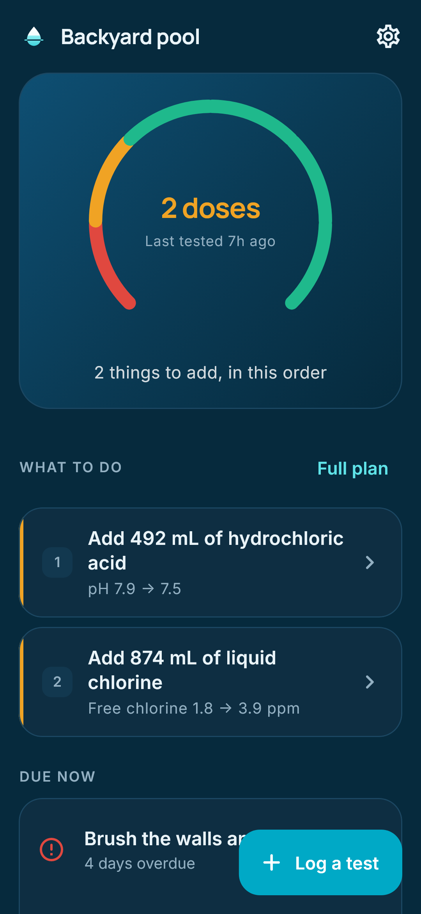
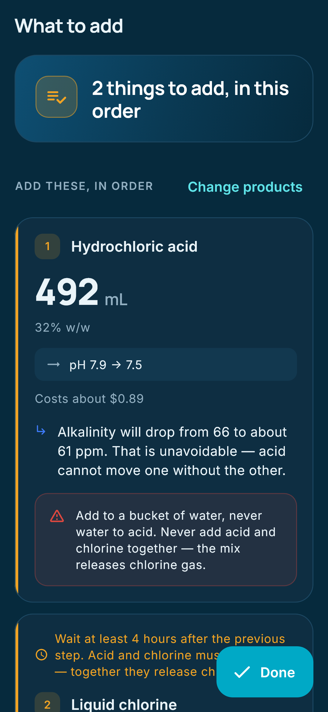
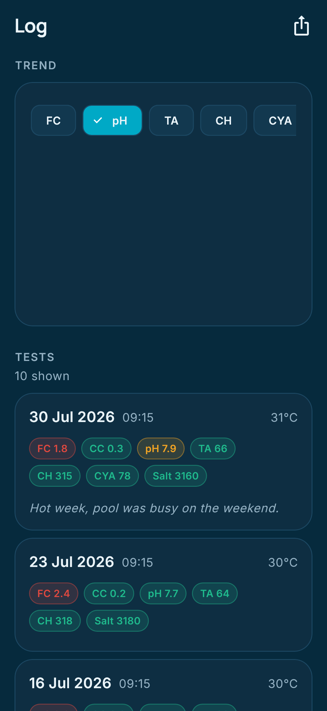
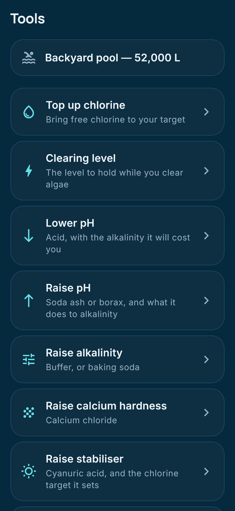

Know exactly what your pool needs.
Enter your test readings. Saturis works out the exact amount of the chemical you already own to add, and in what order.




Why the answer is different
Most pool apps tell you to hold 1–3 ppm of chlorine no matter what. That advice is wrong for most pools, and it is the most common reason a backyard pool goes green while the test strip still reads “OK”.
Chlorine is only as strong as your stabiliser level allows. Cyanuric acid locks most of the chlorine in your water into a reserve that is not sanitising anything, so the level you actually need depends on the ratio of the two. At CYA 30, three parts per million is fine. At CYA 90, it is nearly useless.
Saturis scales your chlorine target to your measured stabiliser — about 11.5% of CYA for a hand-dosed pool, about 5% for a salt-water chlorinator — and tells you why.
What it does
- Exact doses, in the units of the product you own. Australian liquid chlorine is 12.5%, US trade chlorine is 10%, household bleach is 8.25%. Saturis knows which one is in your shed.
- Real pH chemistry. Pool water is buffered, so the acid you need depends on your alkalinity and your stabiliser. Saturis solves all three together, and warns you what a dose will do to your alkalinity before you pour it.
- Langelier Saturation Index, in plain English. Whether your water is quietly dissolving your plaster or laying down scale.
- The order to add things, and how long to wait. Acid and chlorine never meet.
- It tells you when to do nothing. If the water is balanced, it says so instead of inventing a job.
- Your whole log, with trends. See what your water is really doing.
- Reminders that work with no signal. Scheduled on your phone.
Your data stays on your phone
There is no account and no server. Saturis has no internet permission at all, so it cannot send your data anywhere even by accident. Android’s own backup carries your history to a new phone through your Google account, and you can export a readable backup file or a CSV of your log whenever you like.
Full detail in the privacy policy.
Free, and Pro
Free, forever: exact doses for every parameter, chlorine targets scaled to your stabiliser, the saturation index read-out, every safety warning, one pool, no ads.
Pro, one payment: unlimited pools and spas, your full history with trend charts, reminders for every job, CSV export, custom target ranges, and cost per dose.
Not a subscription. Nothing safety related is ever behind the paywall.
Questions?
Read the help page, or email saturisapp@gmail.com.